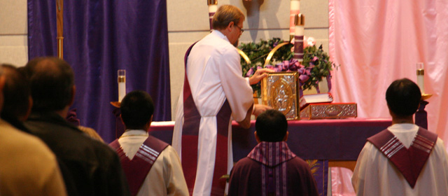

Where All Are Welcome
Call the Parish office : (916) 985-2065
Sacrament of Holy Orders

- The Sacrament of Holy Orders began with the Last Supper, when Christ Jesus commissioned his Apostles to continue the Eucharistic celebration. He also commissioned his Apostles following the Resurrection to be his witnesses to the ends of the earth (Matthew 28:19-20, Acts 1:8). Thomas Aquinas makes the point that only Christ is the true priest, the others serving as his ministers (Hebrews 8:4). St. Ignatius, Bishop of Syria around 100 AD, in his Letter to the Magnesians (6), established the hierarchy of bishop, priest, and deacon for the early Churches, the pattern which still exists today. Bishops are the successors of the Apostles, and priests and deacons are his assistants in rendering service. Men are ordained to the priesthood in the Catholic and Orthodox Churches, as the sacrament confers upon the priest the character to act in the person of Christ - in persona Christi.
- Holy Orders is the sacrament of Apostolic ministry. As in the Pastoral Epistles, the rite consists of the Bishop's laying on of hands on the head of the priest-candidate with the consecrating prayer asking God for the outpouring of the Holy Spirit for the gifts of the ministry. There are three dimensions to ministry, that of Bishop, Priesthood, and the Diaconate.
| Sacrament | Biblical Basis | Central Words | Central Actions | Effects |
|---|---|---|---|---|
Holy Orders (Ordination of |
Mark 3:13-19 & par. - Jesus "calls" and "appoints" the 12 apostles; Acts 6:6; 1 Tim 4:14; 5:22; 2 Tim 1:6 - "laying on of hands" as the "ordaining" or commissioning rite of local Christian leaders |
A long "Prayer of Consecration" |
The bishop lays his hands on the ordinand's head; he also anoints his hands and performs several other symbolic gestures |
Becoming a member of the "ordained" clergy, the church's official leadership "orders" |